Temblad with Fermentor, Gutter, and Vertigoat, Feb 15 @ The Tower Bar
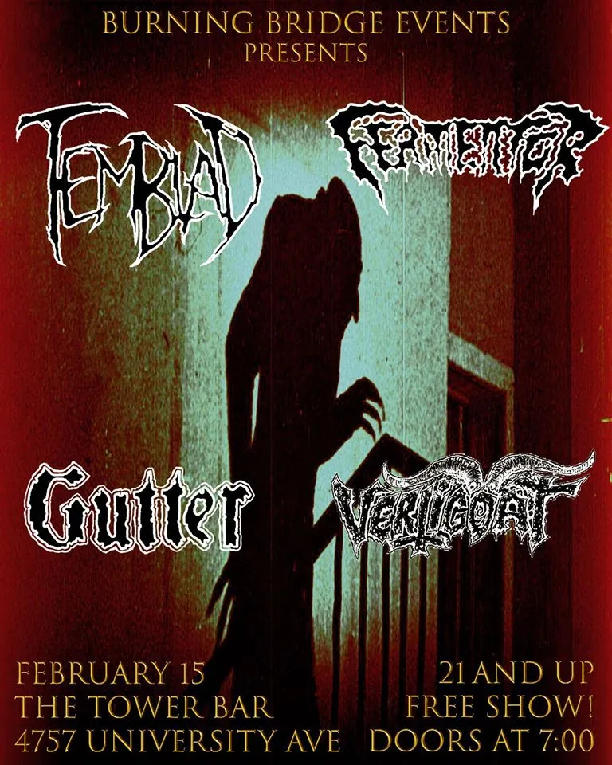
Don’t get sucked into the V-Day marketing propaganda this year and spend some time with your significant
other(s) this Feb 15 at The Tower Bar with Temblad, Fermentor, Gutter, and Vertigoat… this is one
stacked lineup you won’t want to miss! And, it is FREE!
Ten Years of Terror
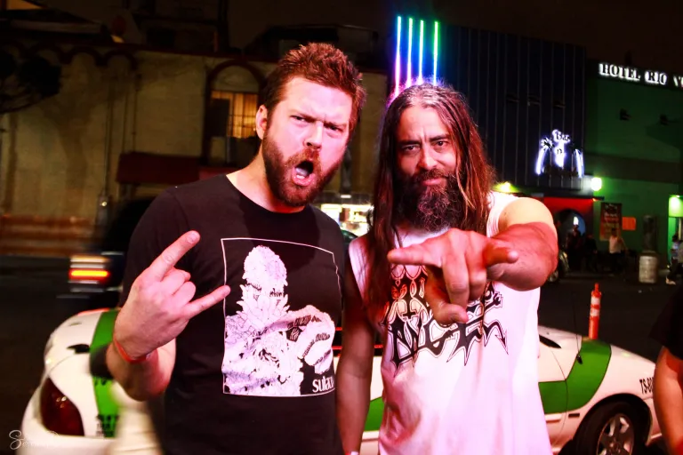
One day back around 2009, Temblad drummer Marlon sent drum recordings to Temblad guitarist/singer
Lorenzo. A couple days later, Lorenzo sent back the recording complete with guitars. Marlon was
astonished how quick Lorenzo was able to improvise to a drum recording but also perform something so
cohesive yet simultaneously chaotic. After discussions of starting a band, months were spent writing the
first Temblad songs: Paralytic, Stratageddon, Hibernus and Mockery of the Fanatic, among others. Ten
years later, the bloodfathers of Temblad continue to invoke the trembling. Despite many rotating
bassists and second guitarists, the core of the band has always remained intact. Here’s to ten years of
collaboration and unwavering dedication to extreme metal!
Photos from Baja California… Tecate, Tijuana, and Mexicali… Temblad loves you!
As this summer comes closer to an end, we in Temblad look back on three amazing shows. The Tecate Summer
Metal Fest in July was one hell of an event. The level of professionalism from the event
organizers was amazing. The stage looked and sounded killer. All the bands were awesome, and our San
Diego friends in
Genestealer and Necrochamber were fucking badass.
It was just one hell of a party with old and new
friends.
Then in early August, we played in Tijuana with Unidad Trauma, Visceral Carnage, and Deathgod at the
coolest bar there, the Dragon
Rojo Rock Bar. It was a great honor to share the stage with all these
bands and spend time with comrades in extreme metal.
Later in August, we ventured further to the desert to play the Baja DeathFest
XIII in Mexicali. This was
an up close and personal kind of performance where the crowd got wild. All the bands were punishing, and
it was especially cool to meet and hang out with Danny Walker, who was there drumming in Unholy Lust.
Beers were spilled, mic stands were broken, bras were removed and boobs were flashed. This will go down
in history as one of the most fun shows we ever played.
Thanks to all our fans in Baja who made it out to these events. WE LOVE YOU ALL!
Photos provided by Tecate Summer Metal Fest and Elena Serrano.
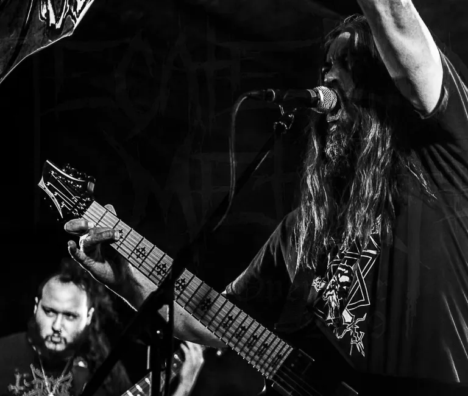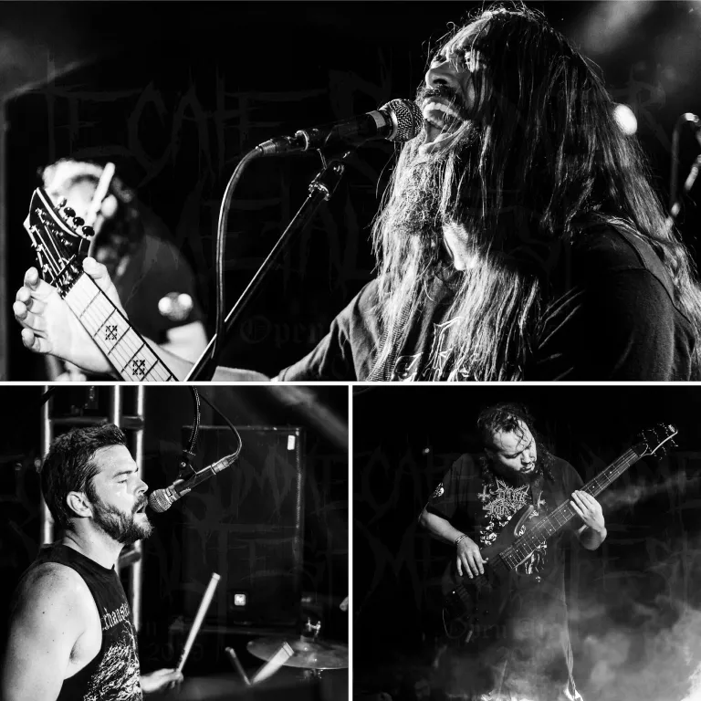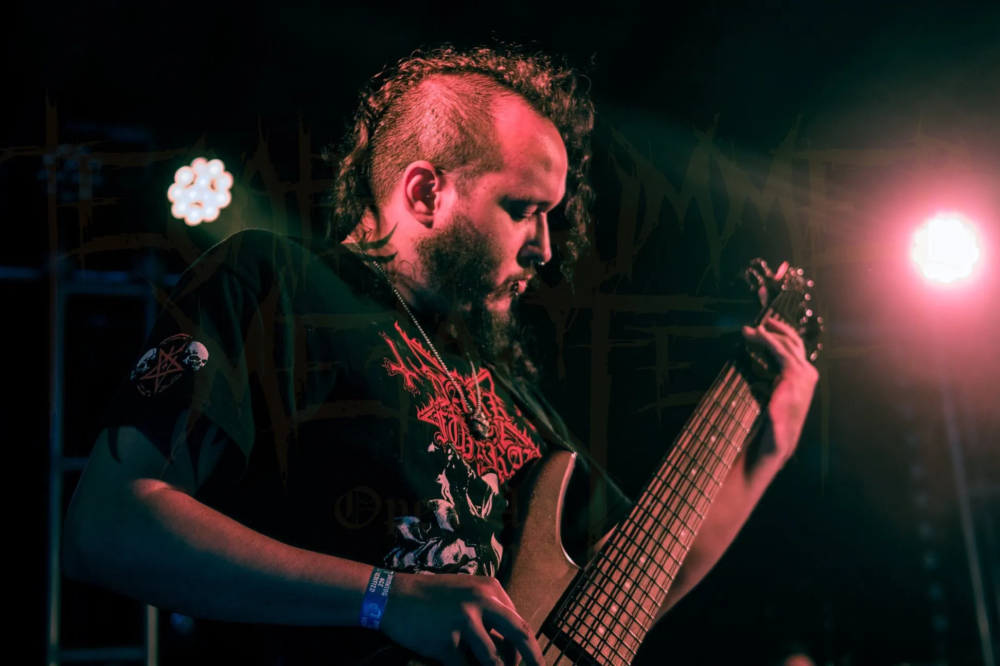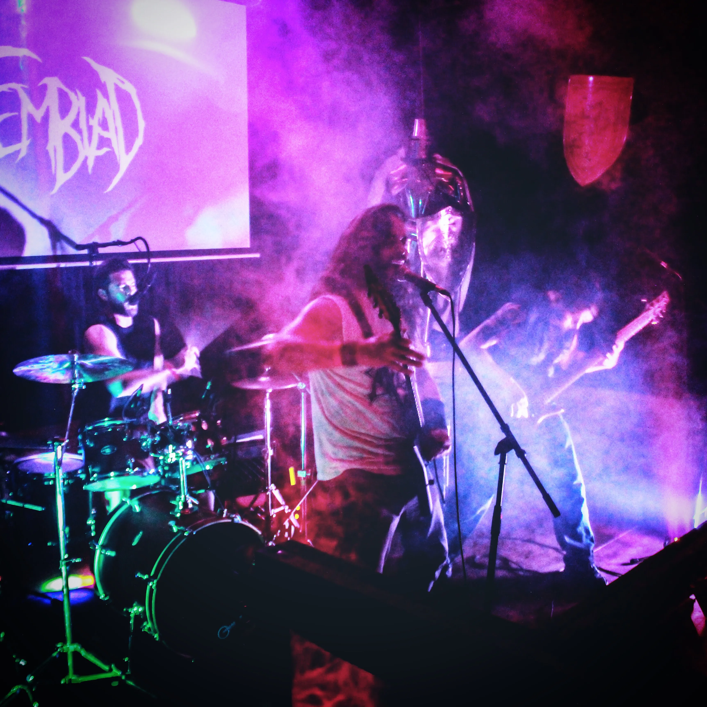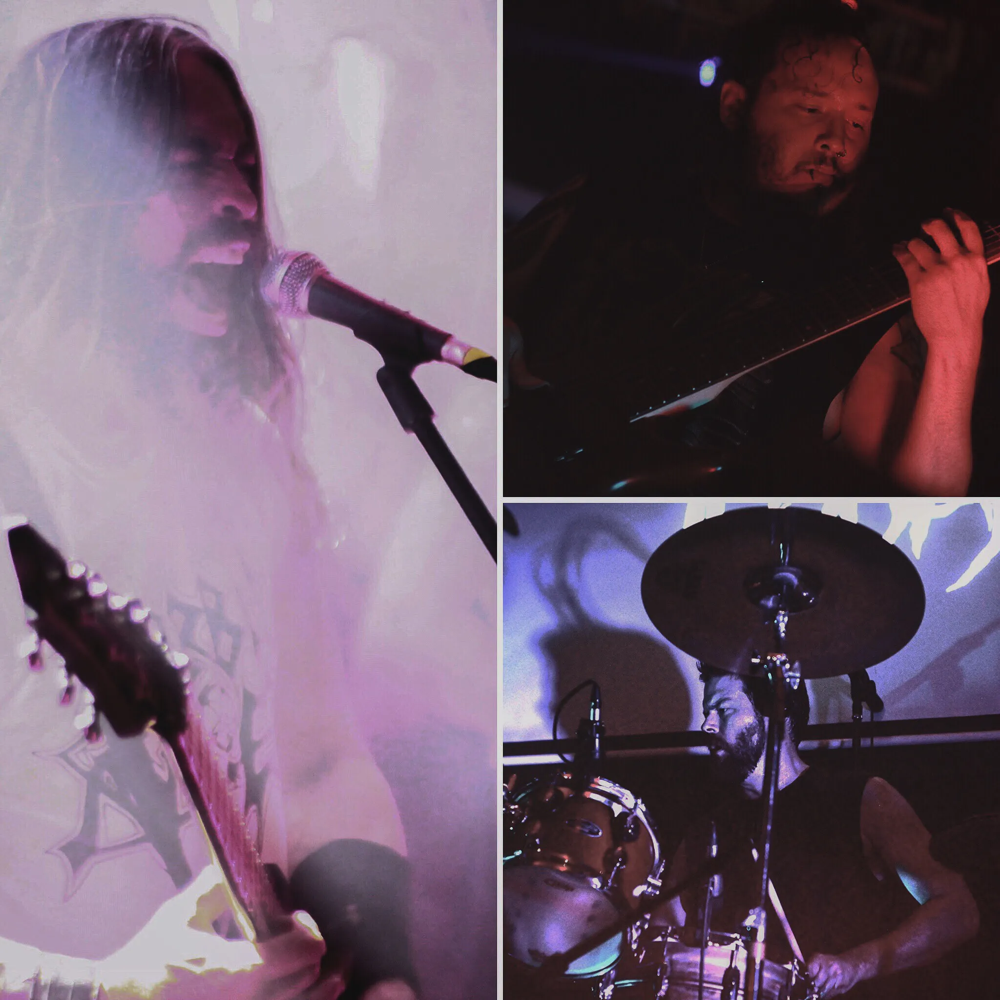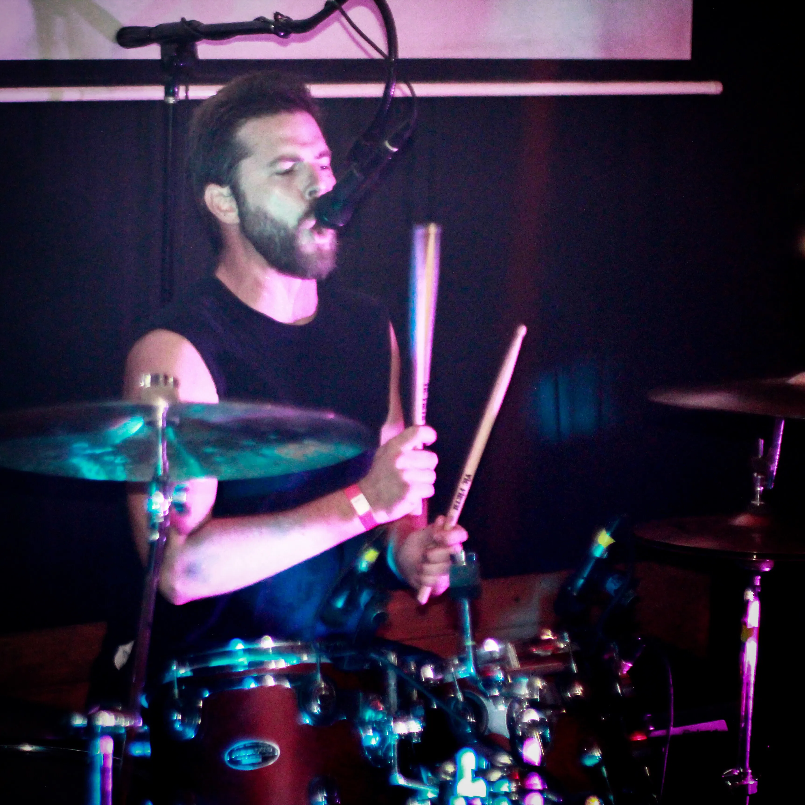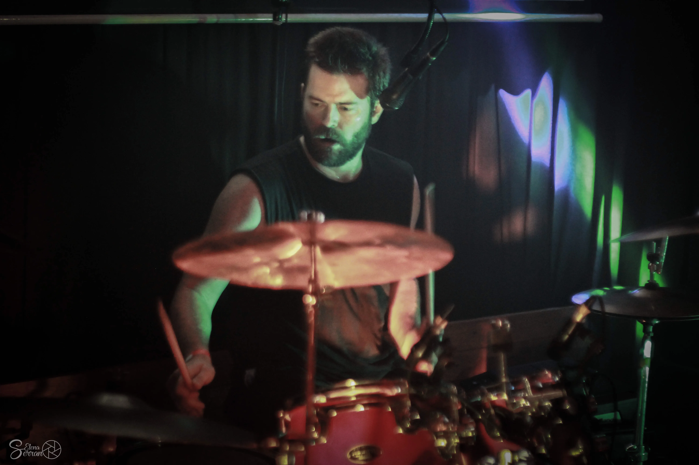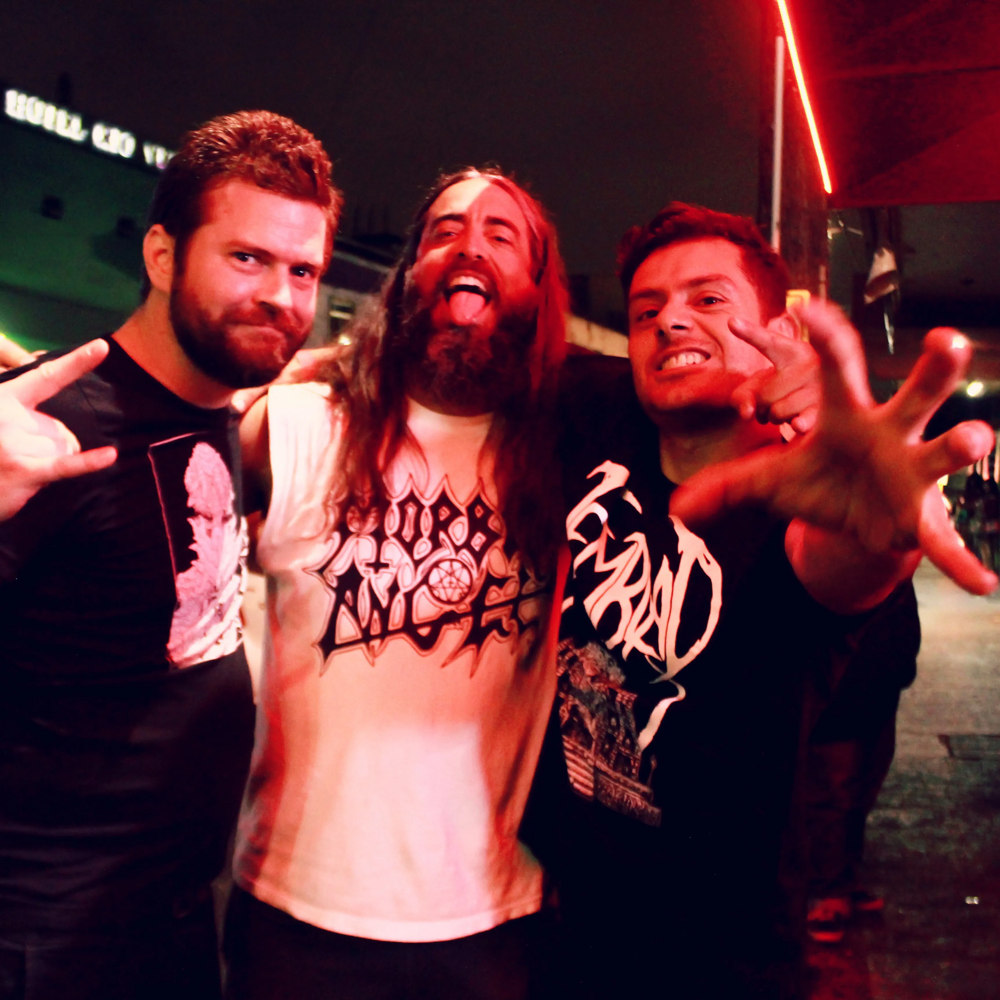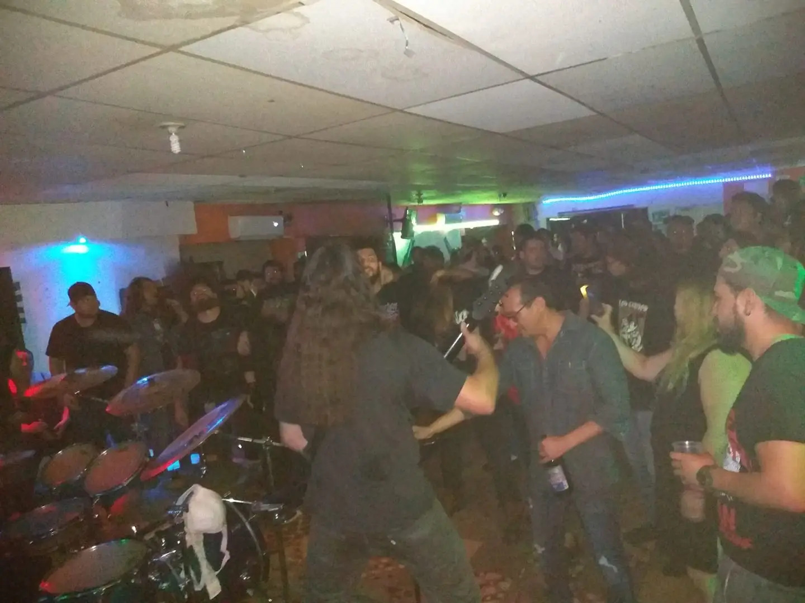
Unholy Lust with Temblad, Templus Execrato, Deconversion, and Nuke, Aug 31 @ Baja
DeathFest XIII – Bar Tio Nacho
Live show footage from Brick by Brick with mixed audio from soundboard!
Enjoy a couple videos from our show at Brick by Brick from 5/1/19, where we opened the night for Cave
Bastard, Unidad Trauma, and Cattle Decapitation. Special thanks to Sherry Mande for the video and Justin
Carrasco for the audio. Video edited and audio mixed by Marlon Matthew.
Cattle Decapitation with Unidad Trauma, Cave Bastard, and Temblad, May 1 @ Brick By
Brick
You've made it to the end of our news archive, which dates back to 2018. Our history dates back to 2010
with more shows and album information, but would you really want to keep going back in time to read all
that? Visit us on Facebook for all the
older posts if you feel so inclined.